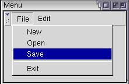
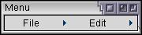

Simple Menu Bars
In this section, we'll see how to create a menu bar with menus on it.
Creating a Menu
XUL has a number of different ways of creating menus. The most basic way is to add a menu bar with a row of menus on it like many applications have. You can also create popup menus. The menu features of XUL consist of a number of different elements which allow you to create menu bars or popup menus. The items on the menus can be customized quite easily. We've already seen part of how to make menus using the menulist. This section will build on that.
Menu bars are usually created much like a toolbar. The menu bar can be placed inside a toolbox and a grippy will appear on its left side so that it can be collapsed. The menu would work just like any other toolbar. XUL does have some special menu elements which provide special functionality typical of menus.
There are five elements associated with creating a menu bar and its menus, which are explained briefly here and in detail afterwards:
- menubarThe container for the row of menus.
- menuDespite the name, this is actually only the title of the menu on the menubar. This element can be placed on a menubar or can be placed separately.
- menupopupThe popup box that appears when you click on the menu title. This box contains the list of menu commands.
- menuitemAn individual command on a menu. This would be placed in a menupopup.
- menuseparatorA separator bar on a menu. This would be placed in a menupopup.
You can customize the menus on the menubar to have whatever you want on them on all platforms except the Macintosh. This is because the Macintosh has its own special menu along the top of the screen controlled by the system. Although you can create custom menus, any special style rules or non-menu elements that you place on a menu may not be applied. You should keep this is mind when creating menus.
Here is an example of a simple menu bar:
Example 5.2.1: Source View<toolbox flex="1">
<menubar id="sample-menubar">
<menu id="file-menu" label="File">
<menupopup id="file-popup">
<menuitem label="New"/>
<menuitem label="Open"/>
<menuitem label="Save"/>
<menuseparator/>
<menuitem label="Exit"/>
</menupopup>
</menu>
<menu id="edit-menu" label="Edit">
<menupopup id="edit-popup">
<menuitem label="Undo"/>
<menuitem label="Redo"/>
</menupopup>
</menu>
</menubar>
</toolbox> Here, a simple menu bar is created using the menubar element. It will create a row for menus to be placed on. Two menus, File and Edit have been created here. The menu element creates the title at the top of the menu, which appears on the menu bar. The popups are created using the menupoup element. It will pop up when the user clicks on the parent menu title. The size of the popup will be large enough to fit the commands inside it. The commands themselves are created using the menuitem element. Each one represents a single command on the menu popup.
You can also create separators on the menus using the menuseparator element. This is used to separate groups of menuitems.
The menubar is a box containing menus. Note that it has been placed inside a flexible toolbox. The menubar has no special attributes but it is a type of box. This means that you could create a vertical menubar by setting the orient attribute to vertical.
 The menu element is normally placed on a menubar, although it does not have to be. However, it will be given a different look. The image here shows what the earlier example would look like without the menu bar.
The menu element works much like the button element. It accepts some of the same attributes plus some additional ones:
- idThe unique identifier of the menu title button.
- labelThe text to appear on the menu, such as File or Edit.
- disabledThis boolean attribute determines whether the menu is disabled. Although you can, there's rarely a need to disable an entire menu. This attribute can be set to either true or false. Of course, the latter is the default.
- accesskeyThis is the key that the user can press to activate the menu item. This letter is typically shown underlined on the menu title. Mozilla will look at the label attribute and add an underline character to the character specified here. For that reason, you should specify a character that exists in the text (although the key will still work if it doesn't).
The menupopup element creates the popup window containing the menu commands. It is a type of box which defaults to a vertical orientation. You could change it to horozontal if you wanted to and the menuitems would be placed in a row. Normally only menuitems and menuseparators would be placed on a menupopup. You can place any element on a menupopup, however they will be ignored on a Macintosh.
The menuitem element is much like the menu element and has some of the same attributes.
- idThe unique identifier of the menu title button.
- labelThe text to appear on the menu item, such as Open or Save.
- disabledThis boolean attribute determines whether the menu item is disabled. This attribute can be set to either true or false where the latter is the default.
- accesskeyThis is the key that the user can press to activate the menu item. This letter is typically shown underlined on the menu title. Mozilla will look at the label attribute and add an underline character to the character specified here. For that reason, you should specify a character that exists in the text.
- acceltextThis specifies the shortcut key text to appear next to the menu command text. It does not associate a key action with the menuitem however. We'll look at how to do this later.
The menuseparator has no special attributes. It just creates a horizontal bar between the menuitems next to it.
(Next) Next, we'll learn some more features of menus.
Examples: 5.2.1